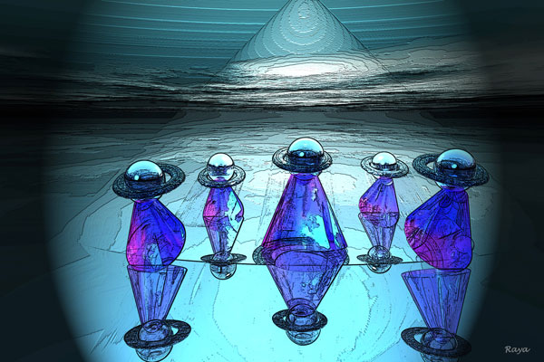
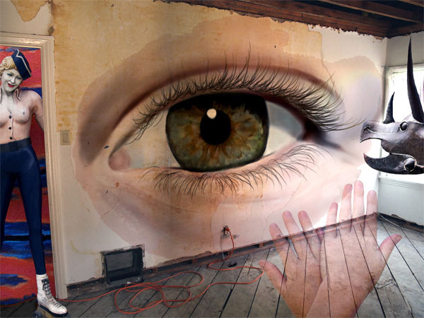
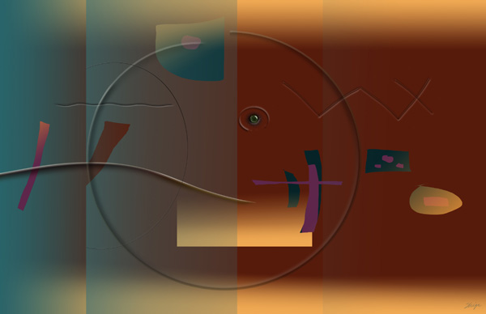
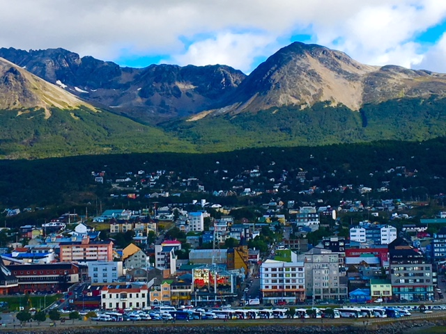
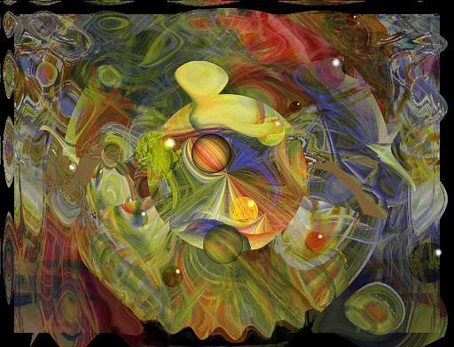

IMAGES OF THE DAY 74
07/01/2023 - 07/10/2023
Donnie 2018
Easter Bunny
by Harshad Shah
07/01/2023
Click image to access Donnie 2018 full exhibit

Donnie 2023
MPC019aP
by Nina Koelman
07/02/2023
Click image to access Donnie 2023 full exhibit

Donnie 2019 
Walking
by Raya Grinberg
07/03/2023
Click image to access Donnie 2019 full exhibit
Abstract Digital Art
Flying Out
by Maria Julia Bastias
07/04/2023
Click image to access artist's full exhibit

Organica: Fractals
Organelle
by Pam Blackstone
07/05/2023
Click image to access artist's full exhibit

Guest Gallery 
Eye Sore
by Lauren Cazden
07/06/2023
Click image to access artist's full exhibit
Drawn Art 
Donnie 2011
The Third Eye
by Shige Yamada
07/07/2023
Click image to access Donnie 2011 full exhibit
Photo Art 
Via iPhone Camera
IMG_0576
by Howard Fishman
07/08/2023
Click image to access artist's full exhibit
Photo-based
Digital Photomontages
Garden and Galaxies
by Susan Karpov
07/09/2023
Click image to access artist's full exhibit
Digital Painting 
Guest Gallery
Substitutiary Locomotion
by KKC Bauder
07/10/2023
Click image to access artist's full exhibit
BACK TO IMAGES OF THE DAY 73
NEXT